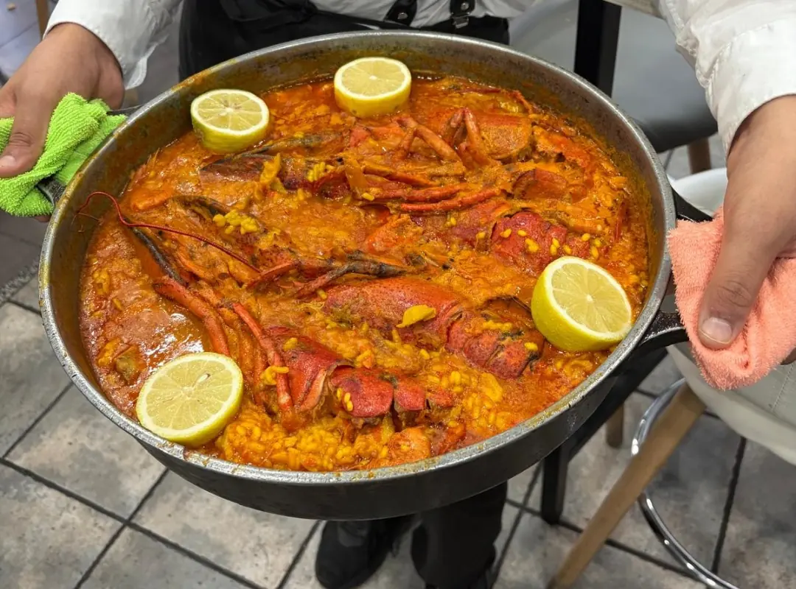
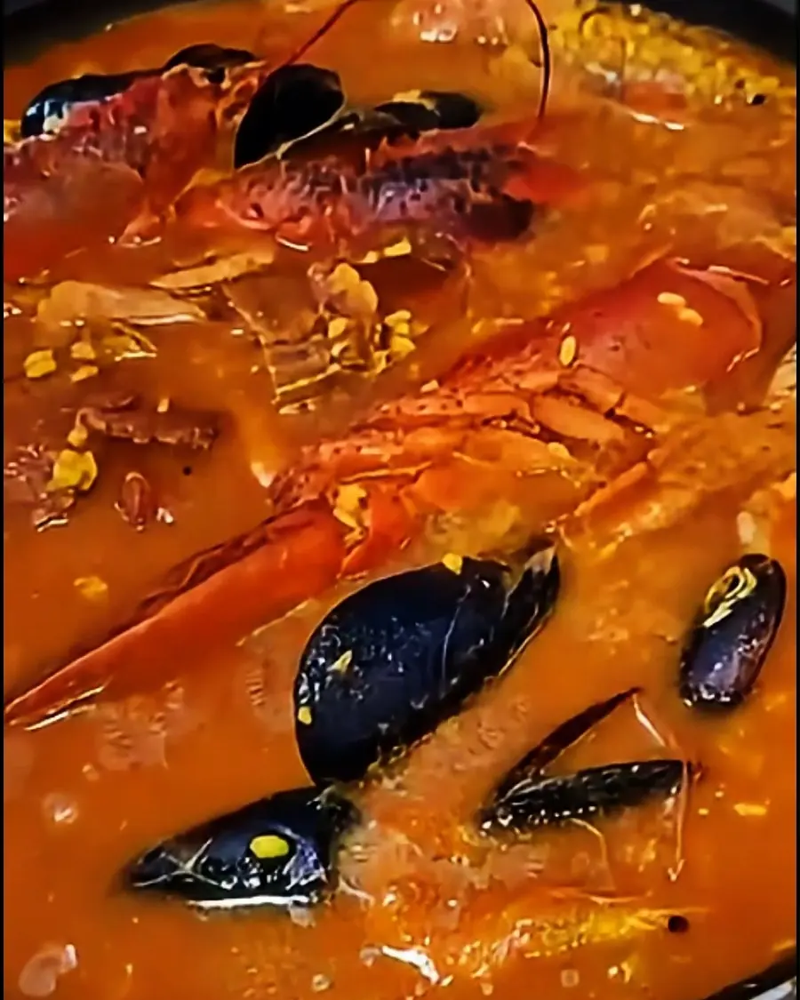
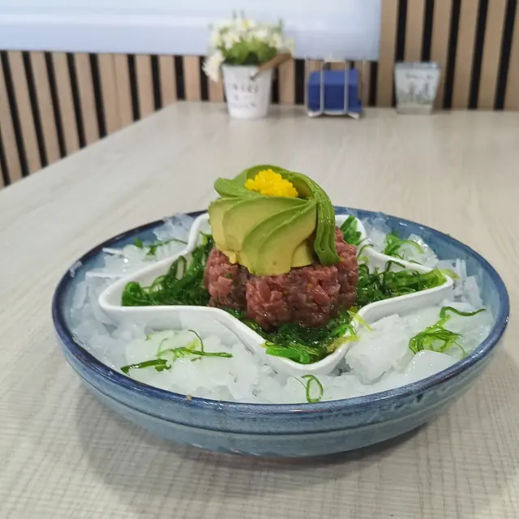
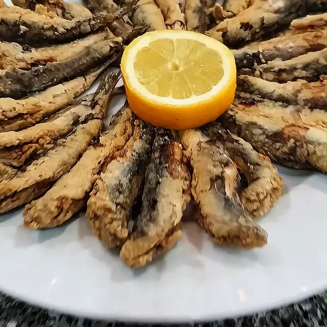
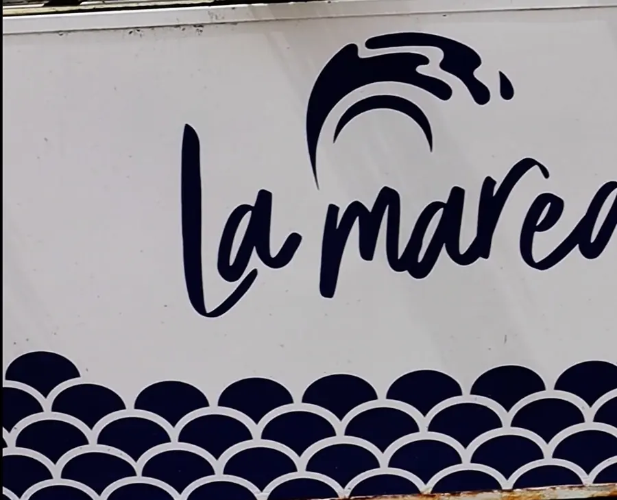

En su Instagram · 9 de octubre de 2026
Variado de marisco, 20 €
Lo anunciaron en un cartel en octubre de 2026. Pregunta si sigue al llamar.
Marisco, pescado y arroces por encargo en Valdemoro. Con terraza.
4,6 en Google · 658 reseñas (24 de octubre de 2026)
Horario · de miércoles a domingo, de 12:00 a 1:00

Se encargan por teléfono con 24 horas de antelación. Mira cuándo puedes comerlo si llamas hoy.
24 hde antelación
Por encargo, con 24 horas de antelación. Abrimos de miércoles a domingo, de 12:00 a 1:00.
En festivos, llama para confirmarlo.

Por encargo, con 24 horas de antelación. Precio por persona, mínimo 2 personas.
Precios por persona de la carta que el restaurante tiene en Google, consultada el 24 de octubre de 2026 (esa carta no tiene fecha y el 28 de febrero de 2026 presentaron carta nueva). Confírmalos al encargar.
Bogavante, zamburiñas, nécora, ostras y almejas, en sus platos azules.
Pescados salvajes al peso: lubina a la sal, mero, virrey, urta, pargo y rodaballo, según su carta. Pregunta disponibilidad y precio.
En su Instagram · 9 de octubre de 2026
Lo anunciaron en un cartel en octubre de 2026. Pregunta si sigue al llamar.
Precios de la carta que el restaurante tiene en Google, consultada el 24 de octubre de 2026. Esa carta no tiene fecha y el 28 de febrero de 2026 presentaron carta nueva: puede haber cambios. Confírmalo al llamar.
Pide la carta al llamar: 616 02 98 05.
Bocaditos de bacalao fritos en tempura25 €
Pata de pulpo con parmentier26 €
Anchoas de Santoña 00 con tostaditas y tumaca24 €
10 unidades.
Patatas bravas «La Marea»12,50 €
Fingers de pollo «crunch»16 €
Oreja de goxu crujiente a la plancha16,50 €
Croquetas caseras de jamón ibérico14 €
8 unidades.
Croquetas caseras de bacalao y puerro confitado al ajoarriero14 €
8 unidades.
Calamar de anzuelo a la plancha con patatas revolconas24 €
Parrillada de verduras22 €
Grande.
Jamón ibérico24 €
Tabla de queso con dulces22 €
Caballitos22 €
Gambones en tempura, 8 unidades.
Chipirones encebollados22 €
Ensaladilla rusa con gambas al ajillo17 €
Cazuela de gambón al ajillo22 €
Tartar de atún rojo con flor de aguacate30 €
Pregunta por el resto de la carta al llamar.

Por encargo, con 24 horas de antelación. Precio por persona, mínimo 2 personas. Mira cuándo puedes comerlo.
Arroz con bogavante22 €
Caldoso.
Arroz señoret22 €
Todo pelado.
Arroz de marisco20 €
Arroz negro18 €
Gambitas blancas fritas20 €
Cazón adobado (bienmesabe)20 €
Boquerones fritos frescos20 €
Rejos a la andaluza18 €·Con alioli casero20 €
Calamarcitos de anzuelo22 €
Tortillitas de camarones4,50 €
Precio por unidad.
«El Barco»35 €
Fritura variada, aproximadamente 1 kg.
«El Montón»55 €
Fritura variada, aproximadamente 2 kg.

Ostra gallega5 €
Precio por unidad.
Zamburiñas al ajillo22 €
6 unidades.
Almejas a la sartén25 €
Vieira rellena gratinada10 €
Precio por unidad.
Navajas frescas al ajillo20 €
Mejillones al vapor20 €
«Na Ni Ná»18 €
Huevos fritos en AOVE con puntilla y patata.
Chanquetitos de la bahía con huevos fritos camperos20 €
Templada de gambas al ajillo16 €
César con pollo crunch16 €
Remojón andaluz16 €
Con bacalao desalado.
Tomate rosa con ventresca22 €
Aproximadamente 1 kg.
Lomo en tomate frito casero25 €
Pil pil de lingote26 €
A bras con revuelto de huevo25 €
Bacaditos en tempura25 €
6 unidades.
Pregunta disponibilidad y precio. Con patatas al horno y verduritas.
Lubina a la sal
Mero
Virrey
Urta
Pargo
Rodaballo
Entrecot trinchado24 €
Lomo alto, aproximadamente 300 g.
Txuleta de vacuno madurado68 €
Aproximadamente 1 kg, con piedra caliente.
Secreto ibérico24 €
Hamburguesa «La Marea»15 €
200 g, con patatas.
Brownie con nueces, helado y nata7,50 €
Torrija «La Marea» flambeada con helado7,50 €
Tarta de queso payoyo7 €
Plato de fruta7 €
Flan o pudding casero6 €
Tiramisú casero7 €
Tarta de 3 leches7 €
Vinos: blancos, tintos y rosados de 18 a 40 € la botella; copa desde 3,30 €.
Pregúntanos por los alérgenos.
Para llevar, según Google. Sin reparto a domicilio.
«Ambiente playero ideal para comernos una fritura ideal.»
Terraza en la calle, bajo el toldo azul, en la esquina de María Moliner con Lili Álvarez. Aparcamiento gratuito en la calle, según Google.
4,6 en Google · 658 reseñas (24 de octubre de 2026)
★★★★★
«Un descubrimiento en mitad de Valdemoro. Tienen lo mejor del mar, a un precio super competitivo.»
★★★★★
«Una calidad inmejorable ya que todo el producto es fresco y unos camareros muy simpáticos.»
★★★★★
«El marisco de primera calidad super fresco»
★★★★★
«La comida espectacular. Pedimos la paella de marisco, boquerones fritos y una ostra gallega rizada.»
★★★★★
«Comimos arroz con bogavante para tres, sobró un montón, que nos lo pusieron para llevar.»
★★★★★
«Las raciones son muy grandes y los camareros te ayudan y aconsejan muy bien.»
★★★★★
«Al ayudarnos a elegir entre el pescado fresco se notó su conocimiento de lo que aportaba cada pieza.»
★★★★★
«Si quieres disfrutar de buenos pescaitos fritos no lo dudes y ven a La Marea.»
★★★★★
«Un producto de calidad a precio razonable.»
★★★★★
«Todo buenísimo, las croquetas de bacalao buenísimas. El pescado muy fresco.»
★★★★★
«El rodaballo estaba espectacular al igual que las zamburiñas. Pescado fresco y de calidad.»
★★★★★
«Local acogedor, comida riquísima con productos de calidad y bien elaborados.»
Frases de reseñas de 5 estrellas en Google Maps, de octubre de 2025 a septiembre de 2026.
Leer las reseñas en GoogleDe 12:00 a 1:00, según Google. Lunes y martes, cerrado.
Reservas · 616 02 98 05
Se recomienda reservar para comer y para cenar, según Google. En festivos, mejor llama.
En la esquina de María Moliner con Lili Álvarez, en Valdemoro.

C. María Moliner, 27
28342 Valdemoro (Madrid)
El mapa es de Google Maps: solo se carga si lo pides, y entonces Google puede guardar sus propias cookies.
¿No está aquí lo que buscas? Llama al 616 02 98 05.
Llamando al 616 02 98 05 con 24 horas de antelación. El precio es por persona y el mínimo, 2 personas.
Sí, por teléfono. Según Google, se recomienda reservar para comer y para cenar.
En noviembre de 2025 había uno de 14,90 €, según la foto de un cliente en Google. Pregunta al llamar si sigue y qué días lo hay.
Sí, en la calle, bajo el toldo azul.
No hay reparto a domicilio. Para llevar, sí, según Google.
Pregúntanos por los alérgenos al reservar o antes de pedir.
Llama para confirmarlo: el horario de los festivos puede cambiar.
O resérvanos mesa en la terraza. Calle María Moliner, 27, Valdemoro.
Miércoles a domingo · de 12:00 a 1:00